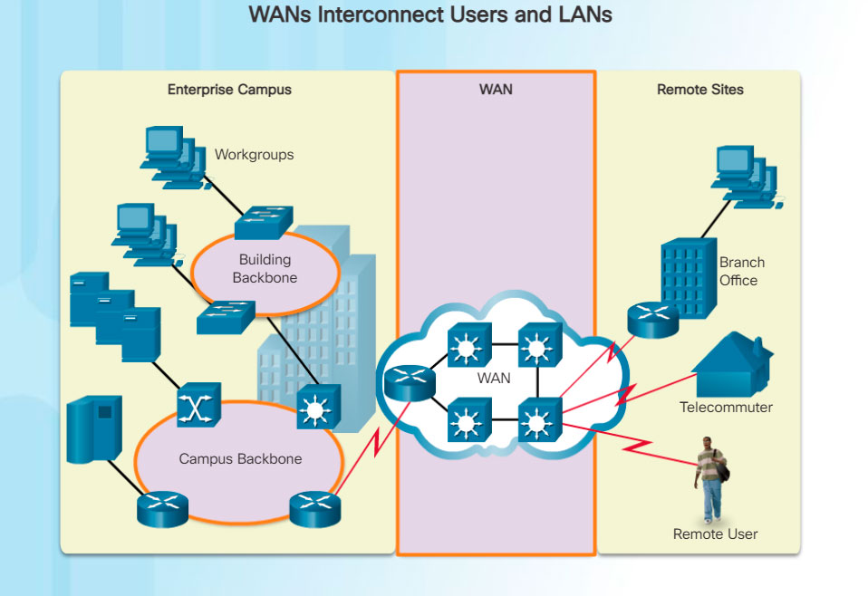

A WAN operates beyond the geographic scope of a LAN. As shown in the figure, WANs are used to interconnect the enterprise LAN to remote LANs in branch sites and telecommuter sites.
A WAN is owned by a service provider. An organization must pay a fee to use the provider’s network services to connect remote sites. WAN service providers include carriers, such as a telephone network, cable company, or satellite service. Service providers provide links to interconnect remote sites for the purpose of transporting data, voice, and video.
In contrast, LANs are typically owned by an organization and used to connect local computers, peripherals, and other devices within a single building or other small geographic area.
